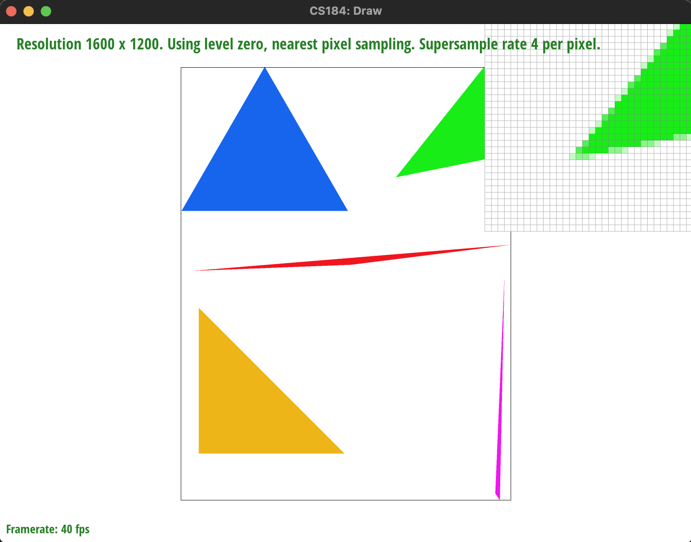

Overview
Give a high-level overview of what you implemented in this homework Think about what you've built as a whole. Share your thoughts on what interesting things you've learned from completing the homework.
Section I: Rasterization
Part 1: Rasterizing single-color triangles
So, to rasterize single color triangles, I essentially followed the steps presented in lecture 2 of using a double for loop
and then checking if it was within the triangle's points or not.
The way I made it efficient was first by setting a bounding box (finding the minimum and maximum x and y values) and setting those as the
values to iterate through, and then using a helper function to determine if the point was inside or outside of the triangle, also by using the
formula listed on the slides. This formula calculates the lines that form the triangles and the relevant normal vectors to see if its in the triangle or not.
I used ChatGPT to help me write up the formula by pasting the formula into ChatGPT as well as the function I had so far.
I didn't like the way ChatGPT formatted things, and it also re-calculated the boundries of the triangle with every call to the "inside" boolean helper function.
So, I refactored the helper function to remove some of the constant re-evaluation of the same coefficients of the polynomial that was derrived, and passed in the coefficnets into the function
instead of passing in everything like I was doing before. I also added an "bool inside" to rasterizer.h just because I think you're supposed to have funcion prototypes in the header files.
So basically, triangles are rasterized by finding the bounding box around the input triangle by finding the maximum x and y values, which I then
iterate over all of the values in the matrix and check if they're within the triangle or not. If they are, I fill the pixel (the middle part of the pixel, so +0.5 and +0.5 to x and y).
This should be no worse than checking/sampling within the bounding box of the triangle since it's only checking the points that are within the bounding box of the triangle as part of the for loop.
Here is an example 2x2 gridlike structure using an HTML table. Each tr is a row and each td is a column in that row. You might find this useful for framing and showing your result images in an organized fashion.
|
|
Part 2: Antialiasing triangles
So the super-sampling algorithm is basically upscaling the sampling matrix by a perfect square factor to make it so that it's much larger than what the actual array is, and then looping over the 1D sample buffer vector(basically dividing the pixels into subpixels). So then when it comes time to call resolve to framebuffer it essentially turn all of the pixels into matrices of size sample_size which are then used to cleverly index into the sample_buffer 1D vector which accumulates the color, which is then averaged and put into the actual frame buffer target.
To put it succinctly: Make every pixel a matrix, make the sample buffer bend to your will and index into it with smart maths, and then average the values to use in the actual frame buffer.
Supersampling is useful since it reduces the jaggies/artifacting in the image.
The main changes were to how the sample_buffer was sized/resized and how it was indexed into such that we still got the proper submatrices corresponding to the proper pixels (subpixels). Basically had to just change the rate at which we sample the points and increase the size of the array to hold more pixel values. So changes were made to the setter function set_sample_rate and set_framebuffer_target functions, and double for loops were placed around functions involving subpixels in rasterize triangle and fill pixel to properly index into the sample_buffer vector.
Supersampling helped antialias by adding more sample points to average over more values to have more intermediate values that results in better lines.
|
|

|
|
|
|
Part 3: Transforms
For this part, I pretty much looked at lecture 4 and coded the matrices from the following lecture slide. These matrices perform the relevant transformation. Pretty much the only thing to keep in mind was to convert from degrees to radians for the rotation matrix.|
|
|
|
Section II: Sampling
Part 4: Barycentric coordinates
For this part, I implemented baycentric coordinates in the function called rasterize_interpolated_color_triangle. To do this I implemented the following formula from the following lecture slide.|
|
|
|
Part 5: "Pixel sampling" for texture mapping
Pixel sampling is quite similar to how rasterization works, (given I mostly copied the same pixel-peeping algorithms that I had before as well as the same loop logic) but the main difference being is that it uses the barycentric coordinates to package away the specific location on the texture map that it wants to get a texture from (which for some reason is scaled down to 1x1) and then is sent off to the sampling algorithm. It calculates the interpolated uv values given alpha, beta, gamma from barycentric coordinates. It then runs nearest or bilinear interpolation to get the color from the texel. I used ChatGPT to help me write sample_nearest and sample_bilinear, which helped me to do the calculations for the bilinear function, as well as find out the structure of the mipmap.
Nearest sampling is basically just finding the closest texel that corresponds to the one provided by u,v and then grabbing the value that it is, while bilinear interpolation just takes the four nearest texels from that u,v point and interpolates them twice for horizontal, and once for vertical (at least according to the slides and my understanding).
|
|
|
|
|
|
To me, it seems the most stark contrast between bilinear and nearest is at higher resolutions with high frequency parts of the image where it's a bit "hit or miss" to to speak as to whether or not the fast-changing part of the image will be sampled properly or not. This is a little bit better with bilinear sampling since there's more data to work with, especially at higher supersampling/resolution. The white line seems to go away in nearest sampling 16 bc the image is overall less sharp and the red line becomes more wavy and blurry with bilinear sampling.
Part 6: "Level sampling" with mipmaps for texture mapping
Level sampling involves calculating a level based on how quickly texture coordinates change with a change in screen space. The higher the D level we get, we will sample at points farther in uv space. This is because we want to include information from the larger change in uv space. This leads to smaller objects(farther away being blurred and higher resolution for objects close). As such, if we dont increase the D, it will lead to undersampling and thus aliasing. As such, when you increase the mipmap level, there will be more smoothness. To do this we first had to calculate the uv coordinates at (x, y+1) and (x+1, y) and then calculate the difference vectors. This led us to calculate the mipmap level shown in the below slide. I used ChatGPT to help with re-writing/re-calculating the barycentric coordinates for the +1 values, as well as clamping the sample and get level functions.|
|
|
|
|
|

|
|
|
Section III: Art Competition
If you are not participating in the optional art competition, don't worry about this section!